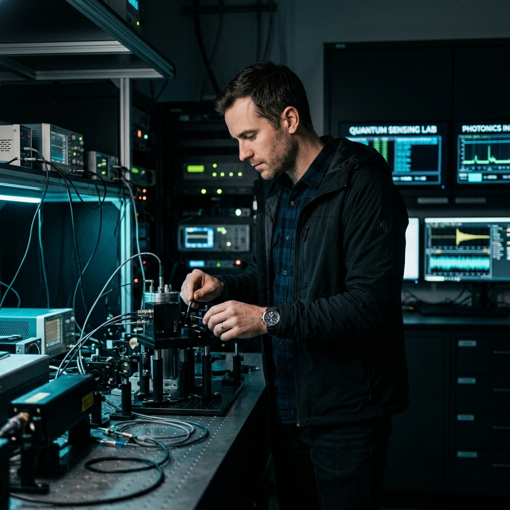

O autoru
Dobrodošli na platformu Keeping up with the singularity, neovisnu platformu posvećenu dubinskoj analizi raskrižja inženjerstva, kvantne fizike, longevityja i razvoja umjetne opće inteligencije (AGI).
Kao inženjer i istraživač primjene naprednih računalnih modela u fizikalnim i građevinskim sustavima, pokrenuo sam ovu publikaciju s ciljem premošćivanja jaza između teorijskih akademskih radova i njihove praktične primjene u modernoj industriji.
Težište mog rada obuhvaća proučavanje termodinamike učenja dubokih arhitektura, B-Rep i parametarske algebarske barijere u CAD automatizaciji, te primjenu generativnih temeljnih modela u strukturnom inženjerstvu.
Fokus istraživanja & Publikacije
- AI u CAD & AEC inženjerstvu: Automatizacija generiranja 3D geometrije i optimizacija BIM procesa.
- Kvantna fizika i neuromorfno računanje: Eksperimentalne analize koherencije i samoorganizirane kritičnosti.
- Longevity i modeliranje proteina: Primjena transformatora u dinamici savijanja proteina i mRNK terapijama.
Kontakt & Suradnja
Za istraživačke upite, recenzije radova ili akademsku suradnju možete me kontaktirati putem:
editor@techhorizons-journal.org
